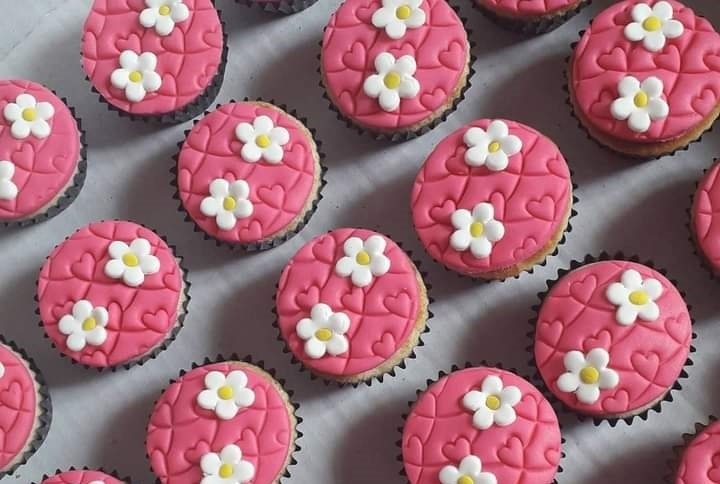
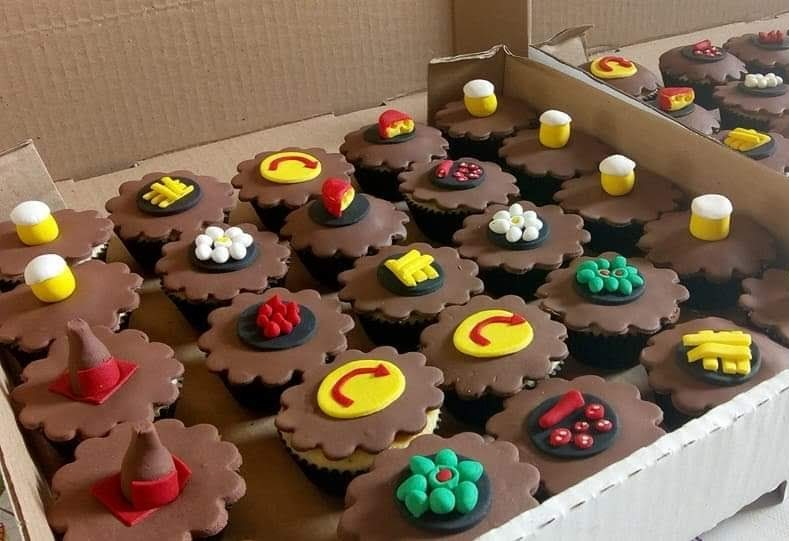
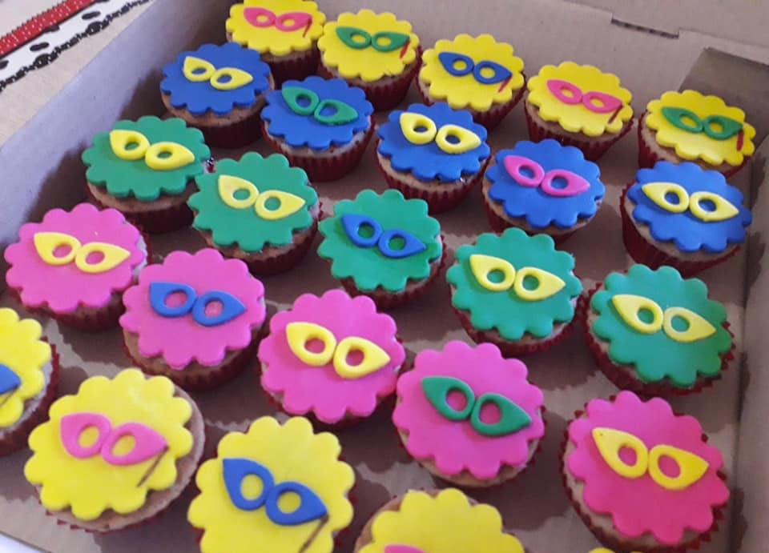

Meu nome é Mariana, sou mãe de 3 meninos e 4 cachorros.
Eu trabalhava com confeitaria artística e personalizada, amava meu trabalho e poder ajudar pessoas a realizarem seus sonhos nas festas
  Mas a pandemia veio e fechou tudo. Precisei abandonar a confeitaria e encarar um trabalho regular, CLT, que mal pagava as contas, mas era o que tinha. Tive uma tendinite que ia do punho ao ombro, me impossibilitando de trabalhar.
Nesse tempo afastada, não fiquei parada. Estudei, terminei minha faculdade em Análise e Desenvolvimento de Sistema, fiz pós em Informática na Educação, Arquitetura de Sistemas de Informação, estou terminando Gestão de Riscos e Cibersegurança e comecei a Pós-graduação em TEA - Transtorno do Espectro Autista
Hummm, você deve ter pensado "ué, o que o TEA tem a ver com todo o resto? Então, depois de muitos anos sendo "estranha", "diferente", "fresca" e "cheia de manias", recebi o diagnóstico de TEA
Com o meu diagnóstico, passei a entender muitos dos meus comportamentos, além de observar mais o comportamento das pessoas ao meu redor. Busquei a pós para me informar mais, pois conhecimento liberta.
Profissional graduada em Análise e Desenvolvimento de Sistemas pela Universidade Norte do Paraná (UNOPAR), com múltiplas especializações nas áreas de Arquitetura de Sistemas de Informação, Gestão de Riscos e Cibersegurança, e Informática na Educação. Possui sólida formação complementar voltada para tecnologia, desenvolvimento de software e inclusão educacional, com foco em TEA (Transtorno do Espectro Autista). Ao longo da trajetória, participou de cursos de extensão e capacitação em desenvolvimento mobile, jogos digitais, linguagens de programação, GitHub, metodologias educacionais inclusivas e práticas de alfabetização voltadas para o autismo. Atua com interesse na interseção entre tecnologia, educação e acessibilidade, buscando promover soluções digitais eficazes e inclusivas.
Você pode entrar em contato comigo através do e-mail: scoralichmari@gmail.com